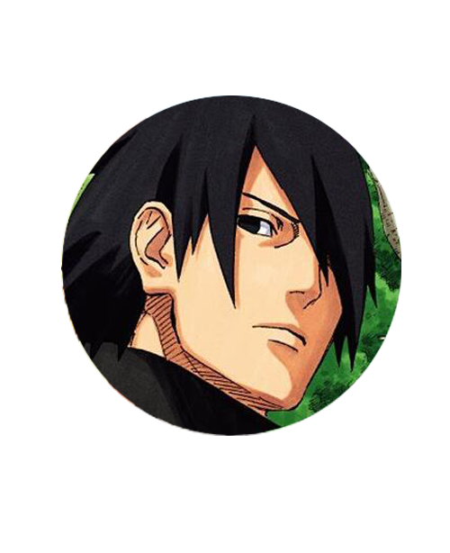
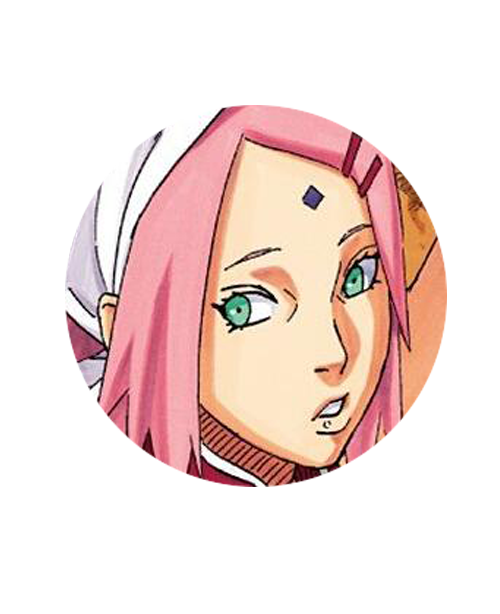
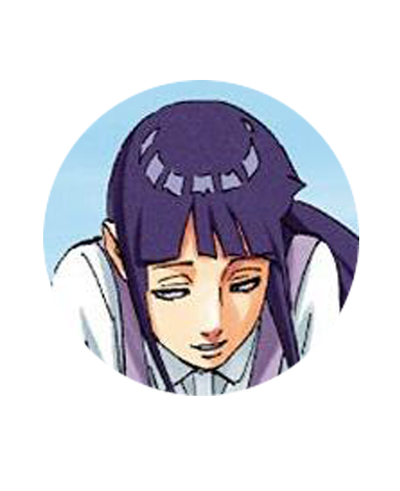
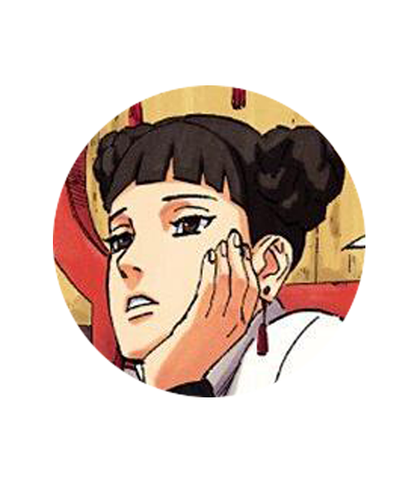
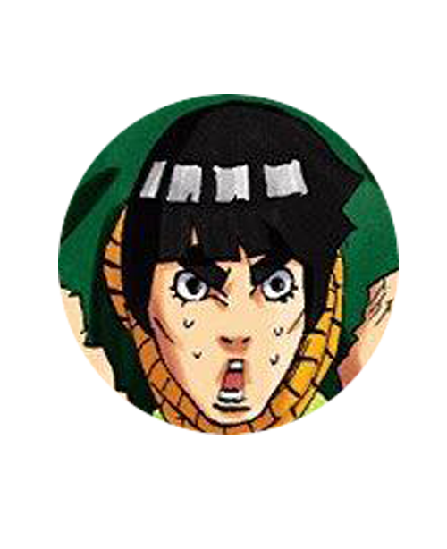
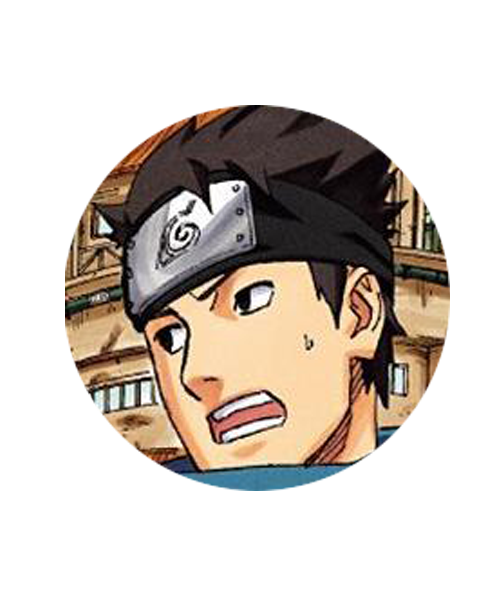
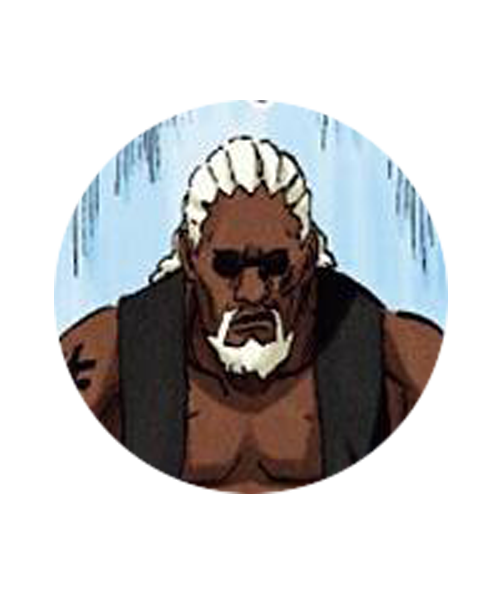

配音 [日]竹内顺子； 木叶忍者村第七代火影。每天都忙到村子的事情， 少有和家人见面。作为父亲，不擅长和博人交流， 在这方面显得有些笨拙。
配音 [日]杉山纪彰； 鸣人的挚友，佐良娜的父亲。 在暗中支持着火影鸣人，并作为博人的师父将忍术等传授给他. 察觉到有危险正在逼近村子而回乡。
配音 [日]中村千绘； 佐助的妻子，佐良娜的母亲。 佐助因任务长时间在外，樱以一人之力抚养着女儿佐良娜。 对佐良娜掌握了怪力感到自豪。
配音 [日]水树奈奈； 鸣人的妻子，博人、向日葵的母亲。 自成为鸣人的妻子之后，一心照顾两人的家庭。 深爱着家人，当家人遇到危险自己也会挺身而出。

配音 [日]田村由加莉 ； 在中忍考试中，担任第二轮考试的监考官。 在木叶村开设一家名为“忍具传”的忍具店。 但是因为处于和平状态，生意并不理想。
配音 [日]增川洋一 ； 在中忍考试中，担任第三轮考试的裁判。 就算是战争结束的和平日子，自己仍在以“青春”口号严格训练。 同时也将自己的青春理念传授给自己的儿子。
配音 [日]高桥英则（成年） ； 是博人，佐良娜，巳月的指导上忍。 战争结束后，已经成为了优秀的上忍。 同时也将自己的青春理念传授给自己的儿子。
配音 [日]江川央生 ； 八尾人柱力，与八尾是伙伴关系。 战争结束后，与八尾在岛龟上修养。 也因为八尾的存在遭到了敌人的袭击。